| ・卒業記念アルバム用写真撮影(H23.11.18) | |||
気がつけば卒業記念アルバムの写真を撮る時期ですね。今年はカメラマンは去年と別の方。攻めの撮影です。 |
|||
|
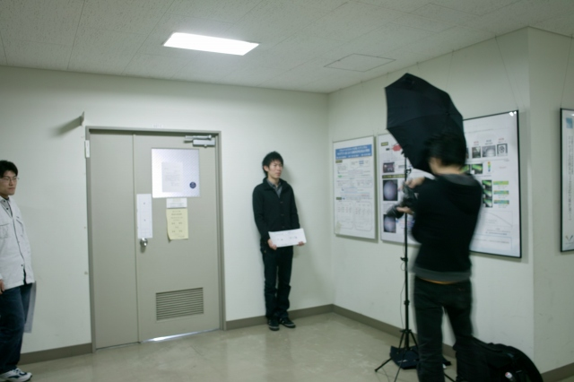
I上くん＠個人撮影 |
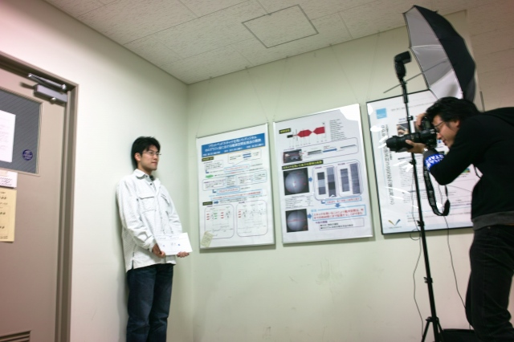
T永くん＠個人撮影 | ||
|
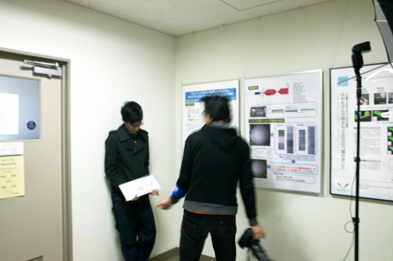
I垣くん＠個人撮影 |
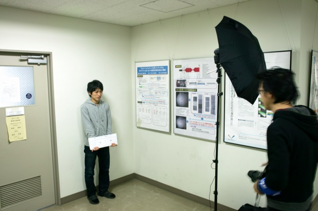
M下くん＠個人撮影 | ||
|
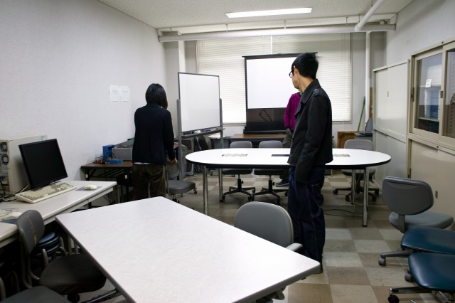
集合写真会場設営中 |
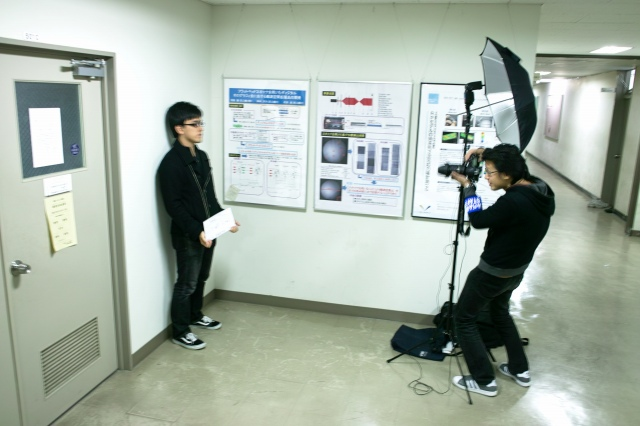
S浦くん＠個人撮影 | ||
|
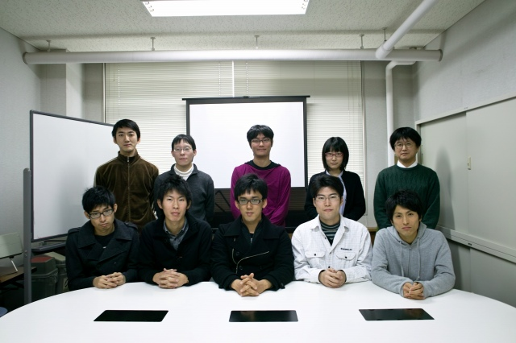
K城くんは学会のお手伝いで欠席 |
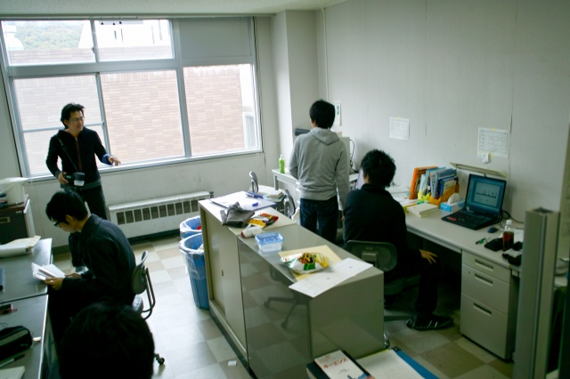
いつもの研究風景で！ | ||
|
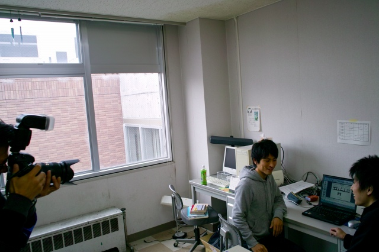
議論してるけど何故かカメラ目線 |
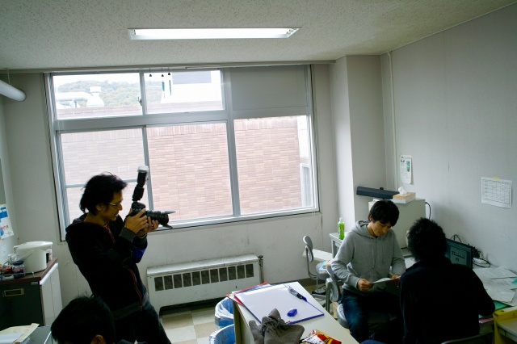
小道具も使って | ||
|
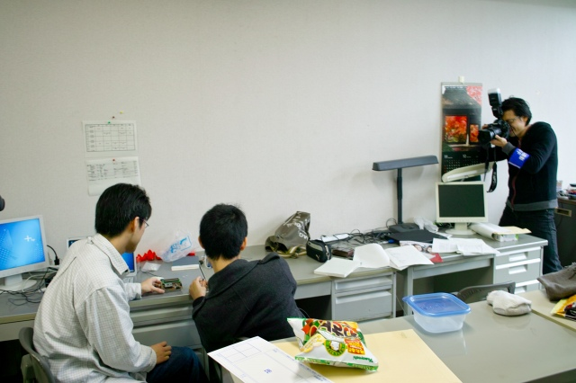
この切削基板に実装された液晶画面で... |
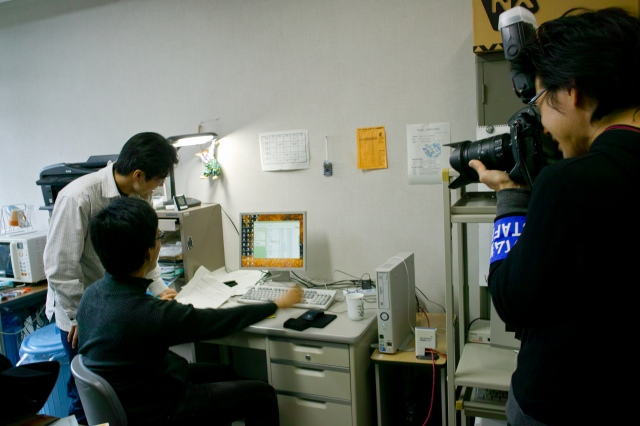
これは！新しい計測手法の予感 | ||